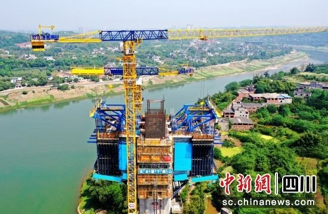
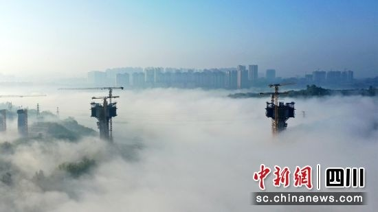

清晨沱江特大桥施工现场出现“平流雾”奇观。

清晨沱江特大桥施工现场出现“平流雾”奇观。
据了解，新建的渝昆高铁设计时速350公里，横贯渝、川、滇三地，是国家铁路“八纵八横”主通道京昆通道的重要组成部分。
由中铁四局承建的渝昆高铁川渝段站前四标位于四川泸州市、宜宾市境内，全长31.006公里，承担桥梁40座、涵洞28座、路
基39段、连续梁10联、箱梁制架681孔、铺轨528.33公里的施工任务。

沱江特大桥40#主墩施工现场。许达摄
沱江特大桥是渝昆高铁川渝段全线控制性工程，全长为2613.315米，采用(124+240+124)米索加劲连续刚构连续梁跨越沱
江，为全线最长的混凝土连续刚构桥，其中每个主墩连续梁共有28个节段，随着1号节段完成，施工将进入10天一节段周期。
中铁四局渝昆高铁川渝段项目指挥长吴军国介绍，为了确保1#节段浇筑，项目部超前筹划，科学研讨制定施工方案，通过BIM
技术对塔柱及连续梁施工进行深化设计分析，施工过程全程盯控，严把施工质量同时，确保施工过程安全有序可控。 渝昆高铁
建成后，将进一步完善国家综合立体交通网，强化成渝地区双城经济圈与滇中地区间联系，大幅压缩重庆至昆明的铁路旅行时
间，极大改善沿线群众出行条件，促进沿线城市经济社会高质量发展。